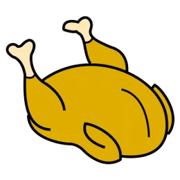
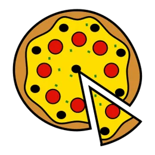
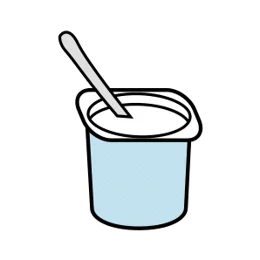
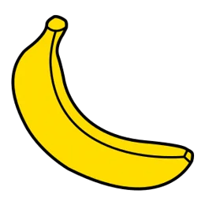
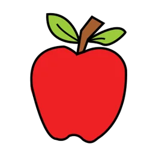
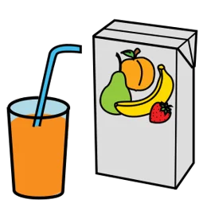
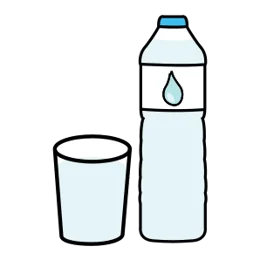

English · 3r ESO · Food
CMy weekly menu
Name:Group:Date:
1Label the food
breadchickenyoghurtpotatosoupjuicetomatofish
2a, an or some?
Can you count it? → a banana, an apple (a, e, i, o, u). You can't count it? → some water.
3Listening: circle what Amira chooses
Main dish fish soup
Dessert
Drink
fish soup
Dessert
Drink milk
milk
fish soup
chicken with rice
pizza
a yoghurt
a banana
an applemilk
juice
waterPictograms: Sergio Palao, ARASAAC (CC BY-NC-SA)1 / 2
4My weekly menu
Write or draw. Use the words from exercise 1.
| Main dish | Dessert | |
|---|---|---|
| Monday | ||
| Tuesday | ||
| Wednesday | ||
| Thursday | ||
| Friday |
5Why?
it's healthyit's tastyit's warmit gives me energyit's from my country
On I'd like because .
On I'd like because .
6Check
- I wrote five days.
- I used because.
My weekly menu · C2 / 2
 I like
I like I don't like
I don't like